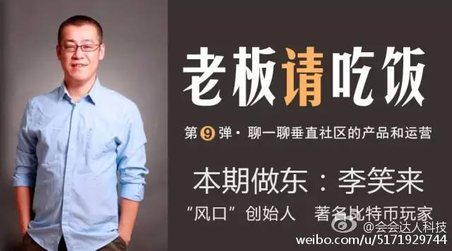

已报名，等抽签。//@李笑来:帮会会散播一下…… 会会这招狠啊，用户出钱请客帮忙宣传……@会会达人科技:【老板请吃饭 | 第九弹】中国著名比特币玩家 /“风口”创始人 @李笑来 本期主题：聊一聊垂直社区的产品和运营。李笑来，原新东方托福阅读、作文老师，畅销书作者；中国最著名的比特币玩家，“风口”创始人。局主说：聊一聊垂直社区的产品和运营。分享，而不是说教。报名点击 网页链接 
遇到这么一个争论：因为是互联网App, 所以一开始要不要赚钱？－ 互联网模式就不应该赚钱，是我听到的最受误解的一句话了。所有值得存在的企业都需要盈利，互联网模式太轻，容易复制，容易抄袭，所以初期的市场占有率更重要，造成了大家都烧钱去抢第一第二的位置。竞争当然也很残酷，一将功成万骨枯。
#社群运营#有人问医生社群的活跃度太低，怎么解决？年轻医生都想和专家们学习和交往，而专家们太忙，没时间搞这些社交。－ 运营者可以做中间方案，围绕利益名声名誉设计，并提供便利，让专家们愿意分享干货，而年轻医生有办法获得这些干货就行了，未必得通过社交。
去年调研期间曾经遇到三人组成的创业团伙，都是兼职，所有的资源就是手上的一些名医联络名单。医疗领域出来创业的人，特别喜欢谈资源，而且基本不会全职。－ 这种不承担风险，空手套白狼的手法，有几个创业能做成的？
回复@很多的三蒸:是这种心理哈。 //@很多的三蒸:不成功，他们也没亏啥呀！@Ada李力:去年调研期间曾经遇到三人组成的创业团伙，都是兼职，所有的资源就是手上的一些名医联络名单。医疗领域出来创业的人，特别喜欢谈资源，而且基本不会全职。－ 这种不承担风险，空手套白狼的手法，有几个创业能做成的？
重做的平台，现在如何？//@非正常土豆: 我讲个故事。在职医药代表，找小团队低成本开发了基于微信的一套医疗相关平台，**凭关系**让医生上来注册，融资1500万，同步以极小的成本收购小团队主力，资金到位后辞职，推倒重做平台……@Ada李力:去年调研期间曾经遇到三人组成的创业团伙，都是兼职，所有的资源就是手上的一些名医联络名单。医疗领域出来创业的人，特别喜欢谈资源，而且基本不会全职。－ 这种不承担风险，空手套白狼的手法，有几个创业能做成的？
回复@吴月超律师:其实干的是黄牛贩子的事儿。 //@吴月超律师:我有几个同学做的项目，把自己做成名医的掮客了，最初赚了点钱，后来不了了之，不知为什么。@Ada李力:最近跟一些人聊，很多创业者在做医生社群，做到最后，盈利模式通常就变成了媒体模式。这是个大坑呢。
回复@黑桃B之胖民工:专业人士群体的购买力弱，盈利只能走E-Marketing模式，增长有限，天花板很低。 //@黑桃B之胖民工:为什么媒体是大坑？@Ada李力:最近跟一些人聊，很多创业者在做医生社群，做到最后，盈利模式通常就变成了媒体模式。这是个大坑呢。
都抱着赚一票就跑的想法，称团队有些太抬举了。//@孙云阳William: 团伙@Ada李力:去年调研期间曾经遇到三人组成的创业团伙，都是兼职，所有的资源就是手上的一些名医联络名单。医疗领域出来创业的人，特别喜欢谈资源，而且基本不会全职。－ 这种不承担风险，空手套白狼的手法，有几个创业能做成的？
手上有医生资源的创业者逻辑通常是这样：先把医生拉进来，然后通过医生拉用户，用户数字增长好看，就去找投资，找来投资砸钱，继续做用户数字增长，接着做下一轮融资。－－ 先行者都是这么干的，无怪乎大家跟着抄，而且各垂直领域四处开花。
有人想建医生社群是因为公司想让医生们使用某工具，工具非必需品，而且使用低频。基于低频工具建立社群很难，还不如直接从#社群运营#角度入手，去干些工会常干的活儿，把这些人能聚起来就行，然后适当机会给这些人推推工具。－ 有点杀鸡用牛刀的意思。
 //@李笑来:帮会会散播一下…… 会会这招狠啊，用户出钱请客帮忙宣传……
//@李笑来:帮会会散播一下…… 会会这招狠啊，用户出钱请客帮忙宣传……